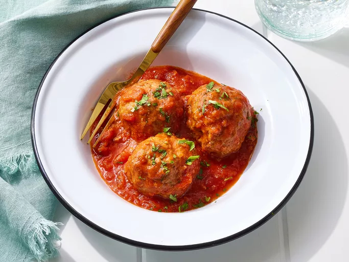

Meatballs
Home

Description:
These Italian meatballs are very easy to make, and since we skip the messy step of pan-frying the meatballs, it becomes downright simple! Here I use a standard half-beef/half-pork mixture. Once the meatballs are baked, add them to your favorite prepared tomato sauce and simmer for 1 to 2 hours.
Ingredients:
- 0.33 cup bread crumbs
- 0.5 cup milk or beef broth
- 2 tsp olive oil
- 1 onion, diced
- 1 lb ground beef
- 1 lb ground pork
- 2 large eggs
- 2 tsp parmesan cheese, grated
- 0.25 fresh parsely, chopped
- 3 cloves garlic, crushed
- 2 tsp salt
- 1 tsp ground black pepper
- 1 tsp dried Italian herb seasoning
- 0.5 tsp red pepper flakes
Directions:
- Cover a baking sheet with foil and spray lightly with cooking spray. Soak bread crumbs in milk in a small bowl for 20 minutes.
- Meanwhile, heat olive oil in a skillet over medium heat. Add onion; cook and stir until onion has softened and turned translucent, about 5 minutes. Reduce heat to low and continue cooking and stirring until onion is very tender, about 15 minutes more.
- Gently stir beef and pork together in a large bowl. Add onions, bread crumb mixture, eggs, Parmesan cheese, parsley, garlic, salt, black pepper, Italian herb seasoning, and red pepper flakes; mix together using a rubber spatula until combined. Cover and refrigerate for about one hour.
- Preheat the oven to 425 degrees F (220 degrees C).
- Form mixture into balls about 1 ½ inches in diameter; arrange in a single layer on the prepared baking sheet.
- Bake in the preheated oven until browned and cooked through, 15 to 20 minutes.
- Serve with your favorite tomato sauce. Enjoy!